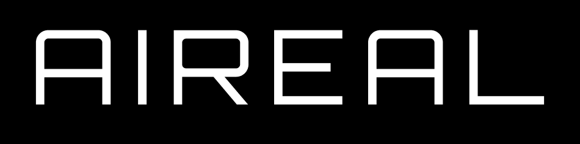

Aireal Solutions
Projekt: Portal för drönartjänster | Typ: Koncept & Visuellt arbete
Kund: Elva Group

Om projektet
Ett koncept- och visuellt arbete för Aireal Solutions, ett drönarrelaterat projekt under Elva Group. Fokus låg på att skapa en portal för drönartjänster med tydliga vyer och ett förslag till designsystem.
Mål
Skapa en portal för en drönartjänst inklusive vyer och designsystemförslag.
Resultat
Skapade förslag till ny logo, hittade designsystem och gjorde vyer och förslag på layout till en framtida portal. Gjorde även en enkät för att samla krav och användarinsikter.
Exempel på sidor